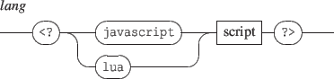

INScore supports Javascript and Lua as scripting languages. Javascript is embedded by default (using the v8 engine - see http://code.google.com/p/v8/. You need to recompile INScore to embed the Lua engine (http://www.lua.org/).
The principle of scripting using a programming language is the following: you can embed javascript of lua code in an INScore file in a way similar to scripts embedded into html files. This code is expected to produce INScore messages on output.

The output of the script section is parsed like INScore messages.
Note that INScore variables are exported to the current language environment.
Example:
|
<?javascript
"/ITL/scene/version set 'txt' 'Javascript v." + version() + "';"; ?> |
A single persistent context is created at application level and for each scene. It allows scripts to reuse previously defined functions and thus design more structured scripts.
Note: the effect of 'load' message is actually to push the messages on the system stack for further evaluation. Thus when including a file containing javascript (or lua), the new language context won't be available to the next messages in the script. The workaround for structured script consists in designing a top level script that only contains 'load' messages.
Example:
|
/ITL load "javascript-code.inscore";
/ITL load "call-javascript.inscore"; |